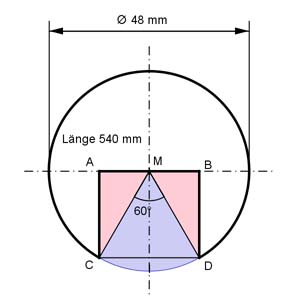

Aufgabe 170 Aus dem Rundstahl, Dichte 7,85 g/cm³, wird über die gesamte Länge die dargestellte Nut ausgefräst. Wie schwer ist der Stab nach dem Ausfräsen?  Wegen des Mittelpunktwinkels von 60° ist die blaue Fläche ein Sechstel des Kreises mit dem Durchmesser 48 mm. r = 48 mm/2 = 24 mm Das Dreieck MCD ist ein gleichseitiges Dreieck und ein Sechstel eines regelmäßigen Sechsecks. --> CD = AB = CM = r = 24 mm Grundfläche G des Rundstahls ohne Ausfräsung: G = π * r² G = π * 24² mm² = 1 808,64 mm² = 18,09 cm² Blauer Kreisauschnitt Ablau : π * r² π * 24² mm² Ablau = -------- = -------------- = 301,44 mm² = 3,014 cm² 6 6 Rotes Dreieck ADreieck : Der Winkel im roten Dreieck bei M = 60° CA CA sin 60° = ---- = -------- |*24 mm r 24 mm CA = sin 60° * 24 mm = 0,866 * 24 mm = 20,8 mm AM = 24 mm/2 = 12 mm AM * CA 2 * ADreieck = 2 * ----------- = 12 mm * 20,8 mm = 249,6 mm² 2 2 * ADreieck = 2,5 cm² Volumen des ausgefrästen Stabes: l = 540 mm = 54 cm V = (G - Ablau - 2 * ADreieck) * l V = (18,09 cm² - 3,014 cm² - 2,5 cm²) * 54 cm = 679,1 cm³ m = V * р m = 679,1 cm³ * 7,85 g/cm³ = 5 330,9 g = 5,331 kg